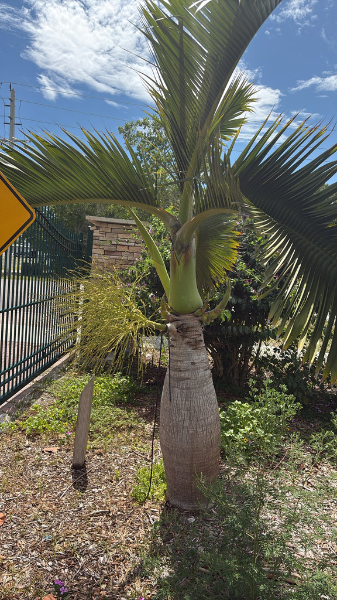

- Fewer than 10 to 15 mature individuals survive in the wild on a single tiny island — yet this is one of the most commonly planted ornamental palms in South Florida.
- The bottle shape is not a water storage device. It's a myth. The swelling is simply how the trunk naturally grows — most pronounced when young, gradually elongating with age.
- Introduced goats and rabbits on Round Island nearly drove it to extinction in the wild — once the animals were removed, the population began recovering.
- The genus name means 'pig fodder' in Greek — the fruits were fed to pigs.
Native exclusively to Round Island, a 219-hectare volcanic islet 22 km northeast of Mauritius in the Indian Ocean. It is naturally endemic to this single location and is classified as Critically Endangered by the IUCN.
- The Bottle Palm is one of the great paradoxes of the plant world — Critically Endangered in the wild with fewer than 15 mature individuals surviving on a tiny island, yet simultaneously one of the most planted ornamental palms in the tropics. The horticultural trade almost certainly saved this species from total extinction.
- The wild population crashed because introduced goats and rabbits ate every seedling, preventing regeneration. After invasive animal control efforts on Round Island, juvenile palms began appearing again — a genuine conservation success in progress.
- The trunk's bottle shape is most dramatic on young plants and gradually elongates with age — old specimens look quite different from young ones. The common myth that the swelling stores water is false; it is simply the natural growth form.
- The genus name Hyophorbe combines the Greek hyo (pig) and phorbe (fodder) — a reference to the historical use of the fruits as pig food. The species name lagenicaulis means 'flask-stemmed' in Latin.
The Bottle Palm produces small white flowers in branched inflorescences that attract bees and small insects. Its round fruits, ripening from green to black, are consumed by birds.
As a solitary ornamental palm its wildlife contribution is modest compared to clustering species — but it contributes nectar during flowering and fruit during ripening, and its smooth trunk and crown provide perching structure for birds in open landscape settings. Its real ecological significance lies in what it represents: a species held in cultivation while the wild population fights to recover.
no offsets or suckering. Germination is slow, typically several months. The lack of vegetative reproduction is part of why the wild population struggled: every individual must grow from seed.
Creamy-white, borne in branched inflorescences that encircle the trunk just beneath the crownshaft. Male and female flowers on the same stalk.
Round, about 1 inch diameter, ripening from green to orange to black.
The defining feature — distinctly bottle-shaped, swelling from near the base and tapering upward. Most dramatic on young plants; elongates and becomes more cylindrical with age. Smooth, gray, with ring scars.
Sparse — only 4 to 8 leaves open at any given time. Leaves are gracefully arching, glossy dark green, feather-like, up to 6 feet long.
The bottle-shaped trunk is unmistakable, especially on young specimens. Look beneath the crownshaft for the encircling flower or fruit stalks. The sparse crown of just a few gracefully arching fronds is unlike the fuller crowns of most other palms in the collection.
This isn't a food plant for people — the fruits were historically fed to pigs, which is where the genus name comes from — but it's harmless, with no known toxicity to people or pets.
- © Randall Carter (CC-BY-NC), via iNaturalist